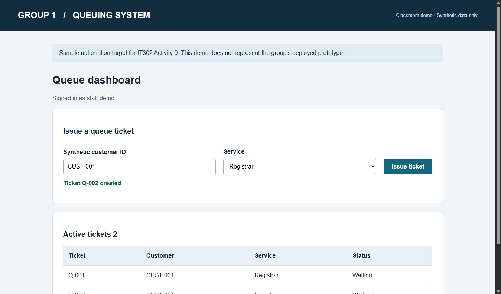
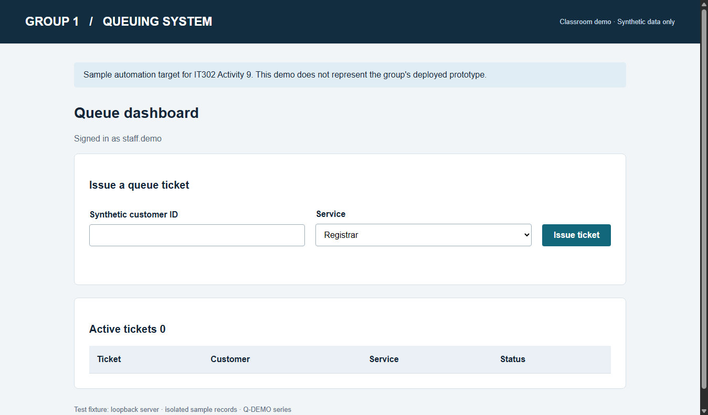
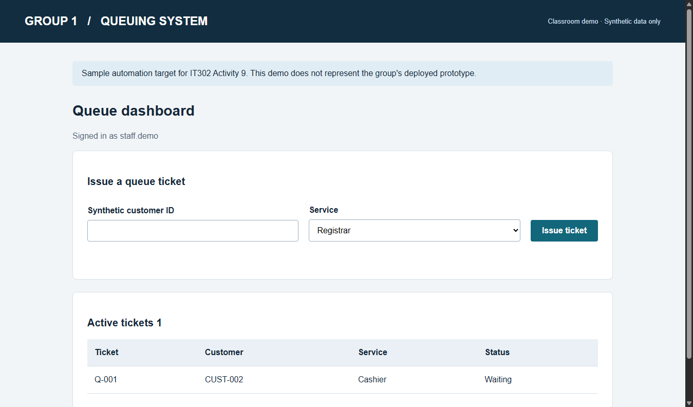
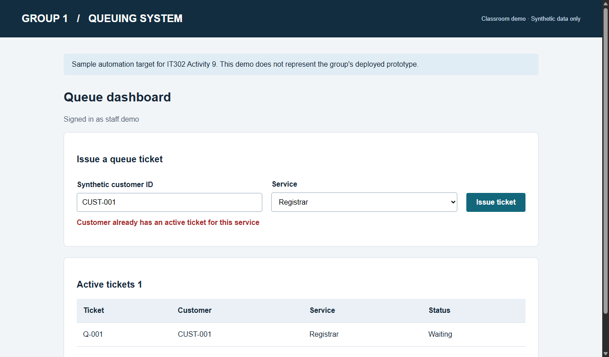
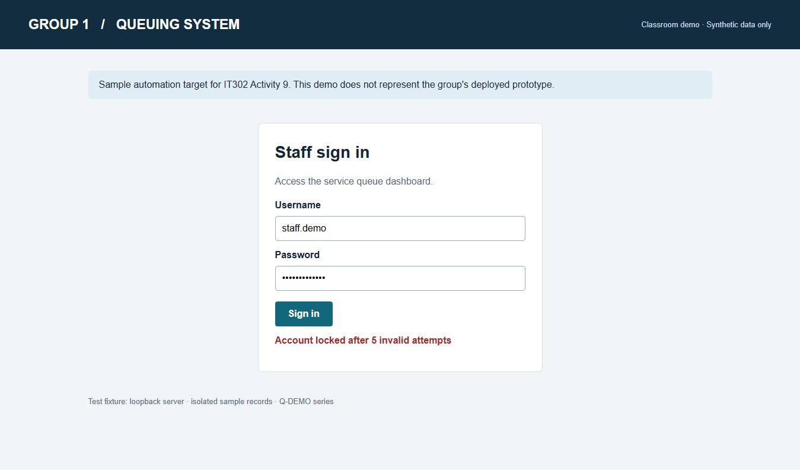
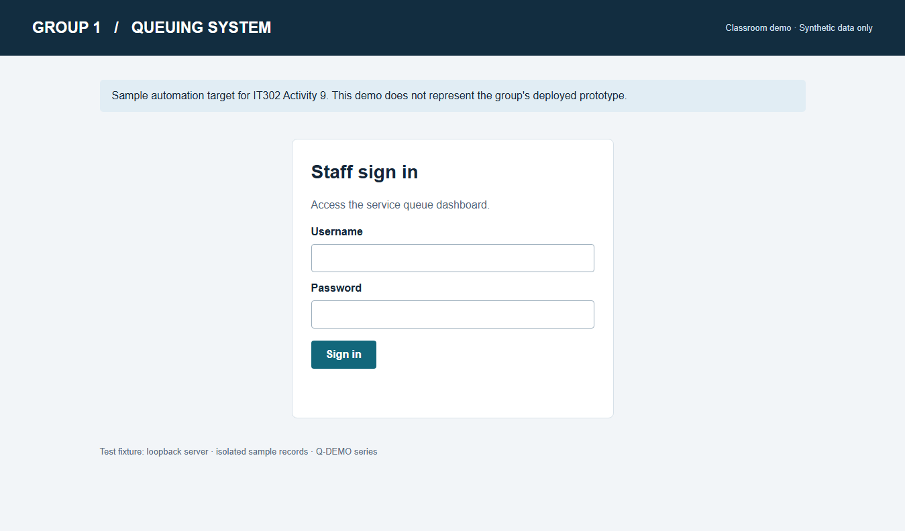

Activity 9 Queuing System Evidence Real browser captures from the bundled classroom demo supporting a theoretical adaptation. These are not test results from the group's deployed prototype. AUTO-Q04 intentionally fails in the bug mode and passes in the fixed mode.
Run 1 · Q-DEMO-1.0-bug 4 passed · 1 failed · 61.45 seconds
JUnit XML · Execution log · Console output
Test Status Case duration test_login[AUTO-Q01] PASS 11.36 s test_login[AUTO-Q02] PASS 10.94 s test_lockout_after_five_invalid_attempts PASS 12.21 s test_duplicate_ticket_is_prevented FAIL 11.77 s test_valid_ticket_is_saved PASS 13.44 s
tests_test_queue_py_test_duplicate_ticket_is_prevented_AUTO-Q04-after-repeat.png 
tests_test_queue_py_test_duplicate_ticket_is_prevented_FAIL.png tests_test_queue_py_test_lockout_after_five_invalid_attempts_AUTO-Q03.png 
tests_test_queue_py_test_login_AUTO-Q01__AUTO-Q01.png tests_test_queue_py_test_login_AUTO-Q02__AUTO-Q02-validation.png tests_test_queue_py_test_login_AUTO-Q02__AUTO-Q02.png 
tests_test_queue_py_test_valid_ticket_is_saved_AUTO-Q05.png Run 2 · Q-DEMO-1.1-fixed 5 passed · 0 failed · 75.36 seconds
JUnit XML · Execution log · Console output
Test Status Case duration test_login[AUTO-Q01] PASS 14.73 s test_login[AUTO-Q02] PASS 15.90 s test_lockout_after_five_invalid_attempts PASS 16.16 s test_duplicate_ticket_is_prevented PASS 12.89 s test_valid_ticket_is_saved PASS 14.48 s

tests_test_queue_py_test_duplicate_ticket_is_prevented_AUTO-Q04-after-repeat.png 
tests_test_queue_py_test_lockout_after_five_invalid_attempts_AUTO-Q03.png tests_test_queue_py_test_login_AUTO-Q01__AUTO-Q01.png tests_test_queue_py_test_login_AUTO-Q02__AUTO-Q02-validation.png 
tests_test_queue_py_test_login_AUTO-Q02__AUTO-Q02.png tests_test_queue_py_test_valid_ticket_is_saved_AUTO-Q05.png